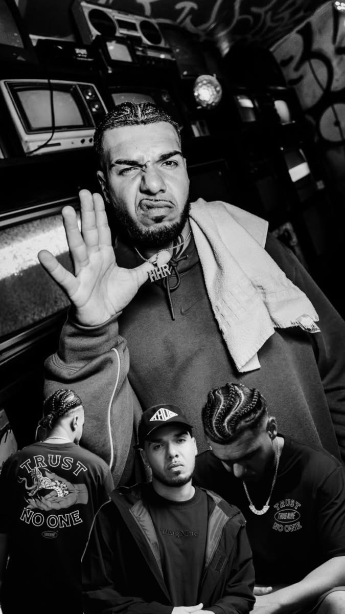

Bem-vindo ao Ouve Aí!
O Ouve Aí é um aplicativo de streaming de música criado para conectar voc aos seus artistas, álbuns e playlists favoritas em um só lugar. Nossa missão é tornar a experiencia de ouvir música simples, rápida e personalizada. Mais que música, uma experiência. Descubra novos artistas, acompanhe os maiores sucessos e mergulhe em um mundo cheio de ritmo e emoção!! tá com dúvida do que escutar, quer ouvir algo diferente ou não aguenta mais ouvir as mesmas músicas? você está no lugar certo, aqui várias recomendações para você
🎧 Milhoẽs de músicas de diversos gêneros.
📀 Àlbuns completos dos seus artistas favoritos.
🎤 Perfis de artistas com seus maiores sucessos.
🎶 Playlists para todos os momentos.
estudo, treino, festas, viagens, relaxamento e muito mais.
🗃️ Biblioteca para salvar músicas, álbuns e playlists.
🔍 Busca inteligente para encontrar qualquer música ou artista em segundos.
O que voce encontra no Ouve Aí?

01P.2026 🎤 QUEM É 2ZDINIZZ? 2ZDinizz, também conhecido como Dois Z Diniz, é um rapper brasileiro criado em Niterói (RJ). Sua identidade musical mistura o rap e o boombap com influências do samba, trazendo suas vivências e referências para suas músicas. Sua trajetória começou ainda na adolescência, quando participou do grupo Card Principal. Ao longo dos anos, desenvolveu seu próprio estilo e passou a contar histórias através de suas rimas. Em 2024, lançou seu primeiro álbum, PATRONO, que marcou uma nova fase de sua carreira e ajudou a colocá-lo em destaque no rap nacional. 🎶 🎧 ESTILO Rap • Boombap • Hip-hop • Samba 📍 ORIGEM Niterói — Rio de Janeiro 💿 ÁLBUM DE ESTREIA PATRONO (2024) «“Entre o rap e o samba, 2ZDinizz transforma suas vivências em música.”» No próximo post: vamos conhecer o álbum PATRONO e algumas das músicas que marcaram sua trajetória. 🎵